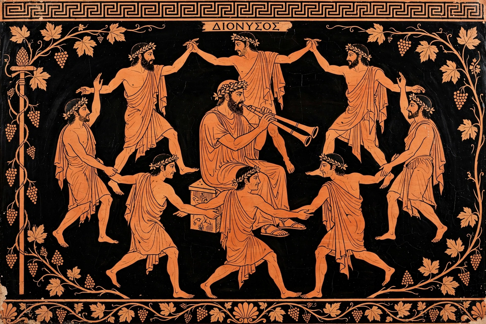

| Dithyramb | |
|---|---|
 Choral performance in honor of Dionysus | |
| Origin | Ancient Greece, by c. 7th century BC |
| Form | Choral hymn sung and danced by a chorus of 50 |
| Dedicated to | Dionysus |
| Key poets | Arion, Lasus, Simonides, Bacchylides, Pindar |
The dithyramb (Greek: διθύραμβος, dithyrambos) was an ancient Greek hymn sung and danced in honor of Dionysus, the god of wine and religious ecstasy. Performed by a chorus of fifty men or boys, usually in a circular formation, the dithyramb became a formal competition genre at festivals in Athens and elsewhere, and is traditionally regarded as a principal ancestor of Greek tragedy.
The word's etymology is obscure and probably pre-Greek; it appears in a fragment of Archilochus (7th century BC), who boasts that he knows how to lead off the dithyramb when his wits are "thunderstruck with wine." Herodotus credits Arion of Methymna, working at Corinth around 600 BC, with being the first to compose, name, and produce the dithyramb in a formal cyclic chorus. Lasus of Hermione is said to have brought the genre to Athens, where it was incorporated into the festival program of the Dionysia at the Theatre of Dionysus.
At the City Dionysia, each of the ten Athenian tribes entered a men's chorus and a boys' chorus of fifty, financed by a wealthy citizen (the choregos) as a public liturgy. Victories were prestigious and commemorated with tripod monuments along the Street of the Tripods. The greatest lyric poets of the age — Simonides, Bacchylides, and above all Pindar — composed dithyrambs, though theirs were literary masterpieces for elite patrons across the Greek world. Only fragments survive, with substantial portions of Bacchylides recovered from papyrus in the 1890s.
Aristotle, in the Poetics, states that tragedy developed from the improvisations of the leaders (exarchontes) of the dithyramb, just as comedy developed from phallic songs. The precise steps remain debated — how a choral hymn acquired a separate actor (Thespis, according to tradition) and plot — but the dithyramb's choral leader, its mythological narratives, and its Dionysiac festival setting make it a plausible seedbed for the drama that flourished alongside it. Distinct from tragedy, the dithyramb itself persisted as a competition genre into the Hellenistic period, evolving under the "New Music" of poets like Timotheus and Philoxenus toward virtuosic, mimetic display that conservatives deplored.
The word survived as a term for wildly enthusiastic speech or writing. Nietzsche, whose Birth of Tragedy (1872) made the dithyrambic chorus central to his theory of the Dionysian, late in life composed his own Dithyrambs of Dionysus. In modern usage a "dithyramb" is any impassioned, rhapsodic utterance.